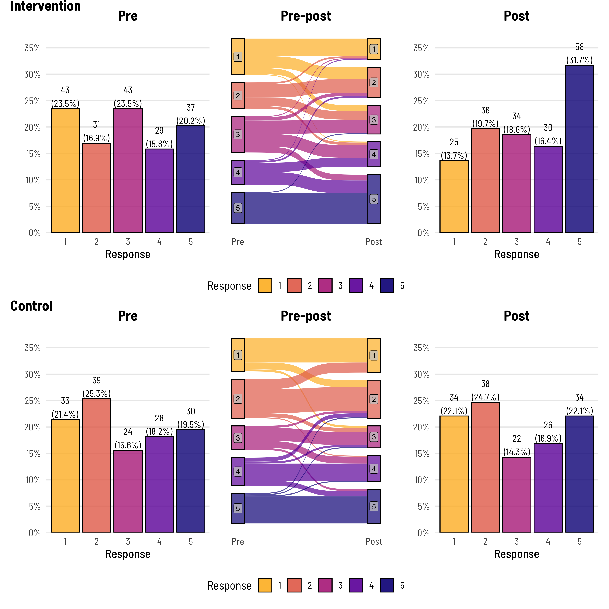
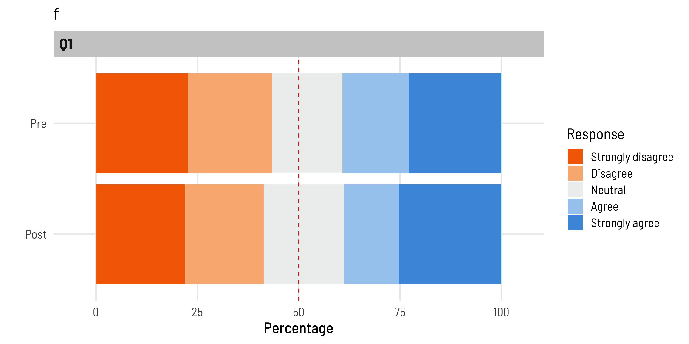

Code
library(simstudy)
library(ggsankey); library(ggalluvial)
library(likert); library(patchwork)
library(gt); library(gtsummary)
library(flextable)
library(thekidsbiostats) # install with remotes::install_github("The-Kids-Biostats/thekidsbiostats")Dr Matt Cooper and Zac Dempsey
September 30, 2024
Likert data are widely found in research, they are useful for getting participants to rate things or to provide an average quantity as a response in situations where asking for the exact quantity is problematic. How can asking for an exact quantity be problematic, well take the example below that we expand upon, very few people drink the exact same amount of water each day, so asking participants “How many (250ml) glasses of water do you drink per day” and getting a response of “3” is typically pointless, there is likely substantial measurement error here and if they the participant drank 4 glasses yesterday (anomaly or otherwise) is the response not just outright incorrect?
The below is nothing ground breaking. We went in search of a concise, succinct, and accurate way to display (specifically) pre-post likert response data, and this is where we are currently at.
Firstly, some definitions. There are two main types of likert data. We are going to refer to them as Ordinal and Bidirectional.
Ordinal likert data (sometimes called unipolar likert data, or possibly interval likert data) is category responses that have some natural order (decreasing/increasing) to them, the width of categories and the distance between categories are not always consistent, and they often represent a underlying continuous scale that has been ‘binned’ into categories.
An example. “How many glasses of water do you typically drink per day? with response options:
Birectional likert data (sometimes called bipolar likert data) is category responses that have a natural order that goes in two opposing directions - typically negative responses and positive responses - around a central (or neutral) point.
An example. “The amount of reading I do influences how much reading my child does? with response options:
We’re going to use one of our favourite packages to create some sythentic data to use.
We have some pre and post response data, a group identified (intervention or control), and then some labelled response columns.
# dat_i is the intervention group
n <- 183 # Set the number of individuals
def <- defData(varname = "pre", formula = "1;5", dist = "uniformInt") # Pre values: uniformly distributed between 1 and 5
dat_i <- genData(n, def)
group_probs <- c(0.45, 0.45, 0.10)
set.seed(123) # For reproducibility
dat_i$grp <- sample(1:3, n, replace = TRUE, prob = group_probs)
dat_i$post <- dat_i$pre
dat_i$post[dat_i$grp == 2] <- pmin(dat_i$pre[dat_i$grp == 2] + (rbinom(sum(dat_i$grp == 2), 2, 0.2) + 1), 5) # Increase by 1, max 5
dat_i$post[dat_i$grp == 3] <- pmax(dat_i$pre[dat_i$grp == 3] - (rbinom(sum(dat_i$grp == 3), 2, 0.2) + 1), 1) # Decrease by 1, min 1
# dat_c is the control group
n <- 154 # Set the number of individuals
def <- defData(varname = "pre", formula = "1;5", dist = "uniformInt") # Pre values: uniformly distributed between 1 and 5
dat_c <- genData(n, def)
group_probs <- c(0.55, 0.25, 0.20)
set.seed(123) # For reproducibility
dat_c$grp <- sample(1:3, n, replace = TRUE, prob = group_probs)
dat_c$post <- dat_c$pre
dat_c$post[dat_c$grp == 2] <- pmin(dat_c$pre[dat_c$grp == 2] + (rbinom(sum(dat_c$grp == 2), 2, 0.2) + 1), 5) # Increase by 1, max 5
dat_c$post[dat_c$grp == 3] <- pmax(dat_c$pre[dat_c$grp == 3] - (rbinom(sum(dat_c$grp == 3), 2, 0.2) + 1), 1) # Decrease by 1, min 1
dat <- rbind(cbind(dat_i, group = "Intervention"),
cbind(dat_c, group = "Control")) %>%
mutate(post = as.integer(post)) %>%
select(-grp)
dat <- dat %>%
mutate(pre_l = fct_case_when(pre == 1 ~ "Less than one cup/day",
pre == 2 ~ "About 1-2 cups/day",
pre == 3 ~ "About 3-4 cups/day",
pre == 4 ~ "About 5-6 cups/day",
pre == 5 ~ "More than 6 cups/day"),
post_l = fct_case_when(post == 1 ~ "Less than one cup/day",
post == 2 ~ "About 1-2 cups/day",
post == 3 ~ "About 3-4 cups/day",
post == 4 ~ "About 5-6 cups/day",
post == 5 ~ "More than 6 cups/day"))
head(dat, 5) %>%
thekids_table(colour = "Saffron", padding = 3)id | pre | post | group | pre_l | post_l |
|---|---|---|---|---|---|
1 | 1 | 2 | Intervention | Less than one cup/day | About 1-2 cups/day |
2 | 3 | 3 | Intervention | About 3-4 cups/day | About 3-4 cups/day |
3 | 4 | 5 | Intervention | About 5-6 cups/day | More than 6 cups/day |
4 | 5 | 5 | Intervention | More than 6 cups/day | More than 6 cups/day |
5 | 1 | 1 | Intervention | Less than one cup/day | Less than one cup/day |
max_prop <- dat %>%
select(id, group, pre, post) %>%
pivot_longer(cols = c(pre, post)) %>%
group_by(group, name) %>%
count(value) %>%
mutate(freq = n / sum(n)) %>%
.$freq %>%
max
max_prop <- plyr::round_any(max_prop, 0.05, f = ceiling)
p1 <- dat %>%
filter(group == "Intervention") %>%
group_by(pre) %>%
tally() %>%
mutate(freq = n / sum(n),
res = str_c(n, "\n(", round(freq*100, 1), "%)")) %>%
ggplot(aes(x = as.factor(pre), y = freq)) +
geom_bar(aes(fill = as.factor(pre)), stat="identity", alpha = 0.8,
colour = "black") +
theme_institute(base_size = 14) +
theme(legend.position = "none",
panel.grid.major.x = element_blank(),
plot.title = element_text(hjust = 0.5)) +
scale_y_continuous(labels = scales::percent_format(),
breaks = seq(0, max_prop, by = 0.05),
expand = expansion(mult = c(0, 0.1))) +
coord_cartesian(ylim = c(0, max_prop)) +
scale_fill_viridis_d(option = "plasma", end = 0.85, direction = -1) +
labs(title = "Pre",
fill = "Response",
x = "Response", y = "") +
geom_text(aes(label = res), vjust = -0.1,
family = "Barlow Semi Condensed") +
guides(fill = guide_legend(nrow = 1))
p2 <- dat %>%
filter(group == "Intervention") %>%
rename(Pre = pre,
Post = post) %>%
make_long(Pre, Post) %>%
mutate(node = factor(node, levels = c(7,6,5,4,3,2,1)),
next_node = factor(next_node, levels = c(7,6,5,4,3,2,1))) %>%
ggplot(aes(x = x,
next_x = next_x,
node = node,
next_node = next_node,
fill = factor(node))) +
geom_sankey(alpha = 0.7,
node.color = 'black') +
geom_sankey_label(aes(label = node), alpha = 0.75,
size = 3, color = "black", fill = "gray80") +
scale_x_discrete(expand = c(0.05,0.05)) +
theme_institute(base_size = 14) +
theme(panel.grid.major = element_blank(),
panel.grid.minor = element_blank(),
axis.title.y=element_blank(),
axis.text.y=element_blank(),
axis.ticks=element_blank(),
legend.position = "bottom",
plot.title = element_text(hjust = 0.5)) +
guides(fill = guide_legend(reverse = T, nrow = 1)) +
labs(title = "Pre-post",
fill = "Response",
x = "")
p3 <- dat %>%
filter(group == "Intervention") %>%
group_by(post) %>%
tally() %>%
mutate(freq = n / sum(n),
res = str_c(n, "\n(", round(freq*100, 1), "%)")) %>%
ggplot(aes(x = as.factor(post), y = freq)) +
geom_bar(aes(fill = as.factor(post)), stat="identity", alpha = 0.8,
colour = "black") +
theme_institute(base_size = 14) +
theme(legend.position = "none",
panel.grid.major.x = element_blank(),
plot.background = element_blank(),
plot.title = element_text(hjust = 0.5)) +
scale_y_continuous(labels = scales::percent_format(),
breaks = seq(0, max_prop, by = 0.05),
expand = expansion(mult = c(0, 0.1))) +
coord_cartesian(ylim = c(0, max_prop)) +
scale_fill_viridis_d(option = "plasma", end = 0.85, direction = -1) +
labs(title = "Post",
fill = "Response",
x = "Response", y = "") +
geom_text(aes(label = res), vjust = -0.1,
family = "Barlow Semi Condensed") +
guides(fill = guide_legend(nrow = 1))We create the plot as three panels, then use patchwork to control the joining together of the panels into one image.
I know what you’re thinking, i) that looks great, ii) slow down, you had two groups. Correct on both accounts. This is just the intervention group data.
q1 <- dat %>%
filter(group == "Control") %>%
group_by(pre) %>%
tally() %>%
mutate(freq = n / sum(n),
res = str_c(n, "\n(", round(freq*100, 1), "%)")) %>%
ggplot(aes(x = as.factor(pre), y = freq)) +
geom_bar(aes(fill = as.factor(pre)), stat="identity", alpha = 0.8,
colour = "black") +
theme_institute(base_size = 14) +
theme(legend.position = "none",
panel.grid.major.x = element_blank(),
plot.title = element_text(hjust = 0.5)) +
scale_y_continuous(labels = scales::percent_format(),
breaks = seq(0, max_prop, by = 0.05),
expand = expansion(mult = c(0, 0.1))) +
coord_cartesian(ylim = c(0, max_prop)) +
scale_fill_viridis_d(option = "plasma", end = 0.85, direction = -1) +
labs(title = "Pre",
fill = "Response",
x = "Response", y = "") +
geom_text(aes(label = res), vjust = -0.1,
family = "Barlow Semi Condensed") +
guides(fill = guide_legend(nrow = 1))
q2 <- dat %>%
filter(group == "Control") %>%
rename(Pre = pre,
Post = post) %>%
make_long(Pre, Post) %>%
mutate(node = factor(node, levels = c(7,6,5,4,3,2,1)),
next_node = factor(next_node, levels = c(7,6,5,4,3,2,1))) %>%
ggplot(aes(x = x,
next_x = next_x,
node = node,
next_node = next_node,
fill = factor(node))) +
geom_sankey(alpha = 0.7,
node.color = 'black') +
geom_sankey_label(aes(label = node), alpha = 0.75,
size = 3, color = "black", fill = "gray80") +
scale_x_discrete(expand = c(0.05,0.05)) +
theme_institute(base_size = 14) +
theme(panel.grid.major = element_blank(),
panel.grid.minor = element_blank(),
axis.title.y=element_blank(),
axis.text.y=element_blank(),
axis.ticks=element_blank(),
legend.position = "bottom",
plot.title = element_text(hjust = 0.5)) +
guides(fill = guide_legend(reverse = T, nrow = 1)) +
labs(title = "Pre-post",
fill = "Response",
x = "")
q3 <- dat %>%
filter(group == "Control") %>%
group_by(post) %>%
tally() %>%
mutate(freq = n / sum(n),
res = str_c(n, "\n(", round(freq*100, 1), "%)")) %>%
ggplot(aes(x = as.factor(post), y = freq)) +
geom_bar(aes(fill = as.factor(post)), stat="identity", alpha = 0.8,
colour = "black") +
theme_institute(base_size = 14) +
theme(legend.position = "none",
panel.grid.major.x = element_blank(),
plot.background = element_blank(),
plot.title = element_text(hjust = 0.5)) +
scale_y_continuous(labels = scales::percent_format(),
breaks = seq(0, max_prop, by = 0.05),
expand = expansion(mult = c(0, 0.1))) +
coord_cartesian(ylim = c(0, max_prop)) +
scale_fill_viridis_d(option = "plasma", end = 0.85, direction = -1) +
labs(title = "Post",
fill = "Response",
x = "Response", y = "") +
geom_text(aes(label = res), vjust = -0.1,
family = "Barlow Semi Condensed") +
guides(fill = guide_legend(nrow = 1))We can double up the plot, again using patchwork to show both groups.

And, we might also like to table some of the ‘change’ data behind this plot, using our favourite package (to battle with) gtsummary.
dat %>%
mutate(Change = fct_case_when(post < pre ~ "Decrease",
pre == post ~ "No change",
post > pre ~ "Increase")) %>%
select(group, pre_l, Change) %>%
tbl_strata(
strata = group,
~.x %>%
tbl_summary(
by = pre_l) %>%
modify_header(all_stat_cols() ~ "**{level}**"),
.combine_with = "tbl_stack"
) %>%
thekids_table(colour = "Saffron")Group | Characteristic | Less than one cup/day1 | About 1-2 cups/day1 | About 3-4 cups/day1 | About 5-6 cups/day1 | More than 6 cups/day1 |
|---|---|---|---|---|---|---|
Control | Change | |||||
Decrease | 0 (0%) | 10 (26%) | 2 (8.3%) | 6 (21%) | 3 (10%) | |
No change | 24 (73%) | 24 (62%) | 13 (54%) | 17 (61%) | 27 (90%) | |
Increase | 9 (27%) | 5 (13%) | 9 (38%) | 5 (18%) | 0 (0%) | |
Intervention | Change | |||||
Decrease | 0 (0%) | 2 (6.5%) | 5 (12%) | 3 (10%) | 1 (2.7%) | |
No change | 21 (49%) | 16 (52%) | 16 (37%) | 11 (38%) | 36 (97%) | |
Increase | 22 (51%) | 13 (42%) | 22 (51%) | 15 (52%) | 0 (0%) | |
1n (%) | ||||||
Or perhaps just this will suffice:
tbl_merge(tbls = list(dat %>%
mutate("Change in water intake" = fct_case_when(post < pre ~ "Decrease",
pre == post ~ "No change",
post > pre ~ "Increase")) %>%
filter(group == "Control") %>%
select("Change in water intake") %>%
tbl_summary(),
dat %>%
mutate("Change in water intake" = fct_case_when(post < pre ~ "Decrease",
pre == post ~ "No change",
post > pre ~ "Increase")) %>%
filter(group == "Intervention") %>%
select("Change in water intake") %>%
tbl_summary()),
tab_spanner = c("**Control**", "**Intervention**")) %>%
thekids_table(colour = "Saffron")
| Control | Intervention |
|---|---|---|
Characteristic | N = 1541 | N = 1831 |
Change in water intake | ||
Decrease | 21 (14%) | 11 (6.0%) |
No change | 105 (68%) | 100 (55%) |
Increase | 28 (18%) | 72 (39%) |
1n (%) | ||
# Set some simulation parameters
set.seed(123) # For reproducibility
# Parameters
q <- 10 # Number of Likert-scale questions
n_i <- 165 # Number of intervention respondents
n_c <- 123 # Number of control respondents
n <- n_i + n_c # Total number of participants
# Define Likert scale labels
likert_labels <- c("Strongly disagree", "Disagree", "Neutral", "Agree", "Strongly agree")
# Simulate pre-survey responses (randomly sampled from the Likert scale 1-5)
pre <- matrix(sample(1:5, n * q, replace = TRUE),
nrow = n, ncol = q)
# Function to simulate post-survey responses with both improvement and decline possibilities
simulate_post <- function(pre_response) {
# Define possible changes with corresponding probabilities
possible_changes <- c(-3, -2, -1, 0, 1, 2, 3)
probabilities <- c(0.05, 0.1, 0.15, 0.4, 0.15, 0.1, 0.05) # "No change" is most likely
post_response <- pre_response + sample(possible_changes,
1,
prob = probabilities)
# Ensure post_response remains within the bounds of the Likert scale (1 to 5)
post_response <- max(1, min(5, post_response))
return(post_response)
}
# Simulate post-survey responses
post <- apply(pre, 2, function(x) sapply(x, simulate_post))
# Convert numeric values to factors with labels
pre <- apply(pre, 2, factor, levels = 1:5, labels = likert_labels)
post <- apply(post, 2, factor, levels = 1:5, labels = likert_labels)
# Combine the pre and post data
dat_likert <- data.frame(id = 1:n,
mode = c(rep("Intervention", n_i), rep("Control", n_c)),
pre,
post)
# Rename the columns to reflect pre and post data
colnames(dat_likert)[3:(2 + q)] <- paste0("Q", 1:q, "_pre")
colnames(dat_likert)[(3 + q):(2 + 2 * q)] <- paste0("Q", 1:q, "_post")
dat_likert <- dat_likert %>%
as_tibble() %>%
mutate(across(contains("Q"), ~factor(., likert_labels)))
rm(n, n_o, n_p, q, likert_labels, pre, post)id | mode | Q1_pre | Q1_post | Q2_pre | Q2_post |
|---|---|---|---|---|---|
1 | Intervention | Neutral | Strongly agree | Disagree | Strongly disagree |
2 | Intervention | Neutral | Strongly agree | Strongly disagree | Strongly disagree |
3 | Intervention | Disagree | Agree | Disagree | Strongly agree |
4 | Intervention | Disagree | Disagree | Neutral | Agree |
5 | Intervention | Neutral | Neutral | Disagree | Disagree |
likert_plot <- function(data,
variables,
grouping = NULL,
centered = FALSE,
plot.percent.low = FALSE,
plot.percent.high = FALSE,
plot.percent.neutral = FALSE,
legend.position = "right",
plot.percents= TRUE,
legend_title = "Response",
legend_reverse = FALSE,
str_width = 40,
facet_ncol = 1){
dat_plot <- data %>%
as.data.frame()
likert_object <- likert(dat_plot %>%
select(!!variables),grouping = dat_plot[[grouping]])
likert.bar.plot(likert_object,
centered = centered,
plot.percent.low = plot.percent.low,
plot.percent.high = plot.percent.high,
plot.percent.neutral = plot.percent.neutral,
legend.position = legend.position,
plot.percents = plot.percents) +
guides(fill = guide_legend(title = "Response",
reverse = TRUE
)) +
geom_hline(yintercept = 50, linetype = "dashed", colour = "red") +
theme_institute(base_size = 16) +
scale_fill_manual(values = rev(c("#f56b00", "#fab580", "#eeefef","#a5ccef", "#4a99de")))
}dat_likert[, c(1, 2, 3, 13, 4, 14)] %>% # CHECK CHECK CHECK
pivot_longer(cols = contains("Q"),
names_to = c("question", "time"),
names_sep = "_",
values_to = "value") %>%
mutate(time = case_when(time == "pre" ~ "Pre",
T ~ "Post")) %>%
pivot_wider(id_cols = c(id, mode, time),
names_from = question,
values_from = value) %>%
mutate(across(contains("Q"), ~forcats::fct_rev(.))) %>%
likert_plot(data = .,
variables = paste0("Q", 1),
grouping = "time") +
labs(title = "f") +
theme(plot.title = element_text(family = "Barlow",
size = 18))
dat_likert %>%
select(id, mode, Q1_pre, Q1_post) %>%
mutate(across(contains("Q"), ~case_when(. == "Strongly disagree" ~ 1,
. == "Disagree" ~ 2,
. == "Neutral" ~ 3,
. == "Agree" ~ 4,
. == "Strongly agree" ~ 5))) %>%
mutate(across(ends_with("_pre"),
.names = "{.col}_change",
.fns = ~biometrics::fct_case_when(
get(sub("_pre", "_post", cur_column())) < . ~ "Decreased",
get(sub("_pre", "_post", cur_column())) == . ~ "No change",
get(sub("_pre", "_post", cur_column())) > . ~ "Increased"
))) %>%
select(id, mode, contains("_change")) %>%
left_join(dat_likert %>% select(id, mode, Q1_pre), by = c("id", "mode")) %>%
select(-id) %>%
tbl_strata(strata = mode,
.tbl_fun = ~.x %>%
tbl_summary(by = Q1_pre,
label = list(Q1_pre_change ~ "Change")) %>%
modify_header(all_stat_cols() ~ "**{level}**"),,
.combine_with = "tbl_stack") %>%
thekids_table(colour = "Saffron", padding = 3) Group | Characteristic | Strongly disagree1 | Disagree1 | Neutral1 | Agree1 | Strongly agree1 |
|---|---|---|---|---|---|---|
Control | Change | |||||
Decreased | 0 (0%) | 1 (3.6%) | 3 (19%) | 5 (28%) | 6 (20%) | |
No change | 21 (68%) | 18 (64%) | 8 (50%) | 7 (39%) | 24 (80%) | |
Increased | 10 (32%) | 9 (32%) | 5 (31%) | 6 (33%) | 0 (0%) | |
Intervention | Change | |||||
Decreased | 0 (0%) | 7 (22%) | 14 (41%) | 8 (28%) | 19 (53%) | |
No change | 23 (68%) | 12 (38%) | 12 (35%) | 9 (31%) | 17 (47%) | |
Increased | 11 (32%) | 13 (41%) | 8 (24%) | 12 (41%) | 0 (0%) | |
1n (%) | ||||||
Thanks to Wesley Billingham for providing feedback on and reviewing this post.
You can look forward to seeing posts from these other team members here in the coming weeks and months.
To access the .qmd (Quarto markdown) files as well as any R scripts or data that was used in this post, please visit our GitHub:
https://github.com/The-Kids-Biostats/The-Kids-Biostats.github.io/tree/main/posts/
The session information can also be seen below.
R version 4.4.0 (2024-04-24)
Platform: aarch64-apple-darwin20
Running under: macOS Sonoma 14.6.1
Matrix products: default
BLAS: /Library/Frameworks/R.framework/Versions/4.4-arm64/Resources/lib/libRblas.0.dylib
LAPACK: /Library/Frameworks/R.framework/Versions/4.4-arm64/Resources/lib/libRlapack.dylib; LAPACK version 3.12.0
locale:
[1] en_US.UTF-8/en_US.UTF-8/en_US.UTF-8/C/en_US.UTF-8/en_US.UTF-8
time zone: Australia/Perth
tzcode source: internal
attached base packages:
[1] stats graphics grDevices utils datasets methods base
other attached packages:
[1] thekidsbiostats_0.0.1 lubridate_1.9.3 forcats_1.0.0
[4] stringr_1.5.1 dplyr_1.1.4 purrr_1.0.2
[7] readr_2.1.5 tidyr_1.3.1 tibble_3.2.1
[10] tidyverse_2.0.0 extrafont_0.19 flextable_0.9.6
[13] gtsummary_2.0.2 gt_0.11.0 patchwork_1.3.0
[16] likert_1.3.5 xtable_1.8-4 ggalluvial_0.12.5
[19] ggplot2_3.5.1 ggsankey_0.0.99999 simstudy_0.8.1
loaded via a namespace (and not attached):
[1] tidyselect_1.2.1 psych_2.4.6.26 viridisLite_0.4.2
[4] farver_2.1.2 fastmap_1.2.0 fontquiver_0.2.1
[7] janitor_2.2.0 labelled_2.13.0 digest_0.6.37
[10] timechange_0.3.0 lifecycle_1.0.4 magrittr_2.0.3
[13] compiler_4.4.0 rlang_1.1.4 tools_4.4.0
[16] igraph_2.0.3 utf8_1.2.4 yaml_2.3.10
[19] data.table_1.16.0 knitr_1.48 labeling_0.4.3
[22] askpass_1.2.0 htmlwidgets_1.6.4 mnormt_2.1.1
[25] plyr_1.8.9 xml2_1.3.6 withr_3.0.1
[28] grid_4.4.0 fansi_1.0.6 gdtools_0.4.0
[31] colorspace_2.1-1 extrafontdb_1.0 scales_1.3.0
[34] cli_3.6.3 rmarkdown_2.28 ragg_1.3.3
[37] generics_0.1.3 rstudioapi_0.16.0 bigmemory.sri_0.1.8
[40] reshape2_1.4.4 tzdb_0.4.0 parallel_4.4.0
[43] fastglm_0.0.3 vctrs_0.6.5 jsonlite_1.8.8
[46] fontBitstreamVera_0.1.1 hms_1.1.3 systemfonts_1.1.0
[49] glue_1.7.0 bigmemory_4.6.4 stringi_1.8.4
[52] gtable_0.3.5 munsell_0.5.1 pillar_1.9.0
[55] htmltools_0.5.8.1 biometrics_1.2.4 openssl_2.2.1
[58] R6_2.5.1 textshaping_0.4.0 kableExtra_1.4.0
[61] evaluate_1.0.0 lattice_0.22-6 haven_2.5.4
[64] cards_0.2.2 backports_1.5.0 broom_1.0.6
[67] snakecase_0.11.1 fontLiberation_0.1.0 Rcpp_1.0.13
[70] zip_2.3.1 uuid_1.2-1 svglite_2.1.3
[73] gridExtra_2.3 nlme_3.1-165 Rttf2pt1_1.3.12
[76] officer_0.6.6 xfun_0.47 pkgconfig_2.0.3
Comments
The above isn’t perfect, one could argue that there is no need to duplicate the figure headings and the legend could be handled better. Is a figure ever perfect?
This figure does show all the raw data (counts and percentages), clearly delineates the pre and post data, gives some idea of the flow of data between levels, and highlights that in the post period, the intervention group comprised a higher proportion of level 5 responses. Combined with the table that shows the actual proportional movements from each pre (baseline) group - and we’re getting somewhere.